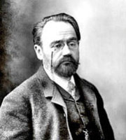

(1840 – 1902)

Yaşadığı dönemde yapıtlarıyla olduğu kadar aydın sorumluluğu sergileyen davranışlarıyla da ilgi çeken Zola, haksız yere suçlanan Yahudi subay Dreyfuss'u savunmada o kadar kararlıydı ki Fransa cumhurbaşakanına hitaben yazdığı "Suçluyorum!" başlıklı yazısı bugün bile unutulmamıştır.
Adı doğalcılık (natüralizm) akımıyla birlikte anılan Fransız yazar Emile Zola (okunuşu: Emil Zola), 1840 yılında Paris'te doğdu. Babası, İtalyan asıllı bir mühendisti. Ancak Zola babasını küçük yaşında kaybetti ve bundan sonraki hayatı zorluklarla geçti. Lise öğrenimini yarım bırakarak çalışmak zorunda kaldı. 22 yaşına kadar Paris'te çok zor bir hayat sürdü. O dönemde en yakın arkadaşı ressam Paul Cézanne idi. 1862'de Hachette (Haşet) kitabevinde işe başlayınca şansı döndü. 1864'de ilk hikayeleri basıldı, Figaro gazetesine makale vermeye başladı. 1865 yılında yayımladığı otobiyografik romanı Claude'un İtirafı dikkatleri siyasal açıdan yazarın üzerine çekince Hachette'teki işine son verildi. Tefrika romanı Marsilya'nın Sırları 1867'de yayımlandı. Aynı yıl kısa sürede tanınmasını sağlayan ilk önemli romanı Thérèse Raquin yayımlandı. Büyük ilgi gördükten sonra 1873'te tiyatroya da uyarlanan Thérèse Raquin'de yazar, "karakterleri değil, insan doğasını incelemek" amacı taşıdığını daha önsözde belirttiği için roman, edebiyatta da doğalcılık akımının ilk ünlü yapıtı kabul edildi.
Romanın başkarakteri olan Thérèse fizyolojik özellikleriyle ele alınmıştır. Romanda Thérèse yaşadığı çevrenin bir ürünü olarak görülmektedir. Yaşadığı çevre gibi ezilmiş bir yapıya sahiptir. Fakat Thérèse yaptıklarından dolayı suçlanmamaktadır; çünkü yaptıkları onun doğasının bir sonucu olarak görülmektedir.
Emile Zola, Balzac'ın İnsanlık Komedyası'na benzer bir kurguyla hazırladığı Rugen Macquartlar ya da açık ismiyle İkinci İmparatorluk İdaresi Altında Bir Ailenin Doğal ve Toplumsal Tarihi dizisiyle 19. yüzyılın ikinci yarısından itibaren Fransa toplumunun derinlemesine bir çözümlemesine girişti. Toplam yirmi bir kitaptan oluşan Rugen Macquartlar serisi yazarın en tanınmış romanları olan Nana, Germinal ve Meyhaney'i de kapsar.
Zola, 1871 yılında başlayan bu dizisi ile birlikte, Fransa'da doğalcılık akımının da öncüsü oldu. "Doğalcılık" vurgusunu, gerçekçiliğin sıradanlaştığı ve etkisini yitirdiği bir dönemde, kendi yöntemleriyle diğerleri arasındaki ayrımı belirtmek için kullandı ve romanı bilimselleştirmeyi amaçladı. Doğalcılık akımı o dönem Fransasında ve ardından başka ülkelerde -özellikle Osmanlı Devleti'nde- büyük yankılar uyandırdı ve yazarlar arasında benimsendi. Ancak doğalcılık akımının karşıtları da çoktu ve Fransız edebiyatındaki ilk gerici akım, doğalcılığa bir tepki olarak gelişti.
Zola'nın edebiyat dışındaki şöhreti, dönemin dünya çapında ilgi uyandıran politik olayı "Dreyfus Davası"nda gösterdiği aydın tavrından kaynaklandı. 1897 yılında Fransız ordusunda Yahudi olması nedeniyle askeri yargının duyarsızlığına kurban giden Yüzbaşı Dreyfus'u -hükümetin bütün baskılarına rağmen- savunan ve dönemin Fransa devlet başkanı Félix Faure'a hitaben "Suçluyorum" makalesini yayınlayan Zola, bu sert ve haklı tavrı nedeniyle bir süre Londra'da yaşamak zorunda kaldı. Ancak sonuçta davanın yeniden görülmesini sağladı. Adalet yerini bulunca ülkesine dönen Zola, 29 Eylül 1902 gecesi, bir bacanın yol açtığı duman zehirlenmesinden öldü. Ölümünün örtülü bir cinayet olduğu yolunda spekülasyonlar yapıldıysa da bu iddia hiçbir zaman kanıtlanamadı. Ölümünün ardından Montmartre Mezarlığı'nda toprağa verilen yazarın kemikleri, altı yıl sonra "Panthéon"a nakledildi.
Seçme Romanları: Thérèse Raquin (1867), Meyhane (1877 – Sosyal Yayınları, 2003), Nana (1880), Germinal (1885)